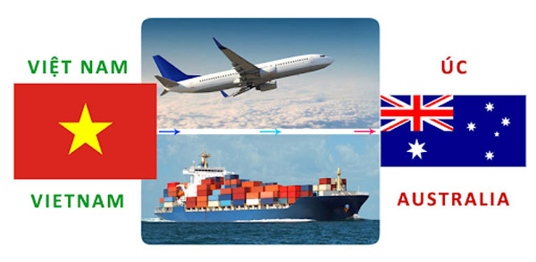

Hướng dẫn gửi hàng đi Úc tại Bình Dương an toàn và nhanh chóng
Quan hệ Việt Nam – Australia là mối quan hệ ủng hộ, hỗ trợ lẫn nhau. Trong quá trình hỗ trợ, cùng nhau đi lên và phát triển, việc vận chuyển hàng hoá là hoạt động bắt buộc phải có. Để hoạt động gửi hàng đi Úc tại Bình Dương diễn ra trơn tru, sau đây là những điều bạn cần phải nhớ khi vận chuyển quốc tế.

Để tiết kiệm thời gian, đơn giản hoá thủ tục, hôm nay chúng tôi sẽ chỉ bạn 6 bước gửi hàng đi Úc tại Bình Dương nhanh chóng và gọn gàng.
- Bước 1: Nhân viên tiếp nhận thông tin và yêu cầu của khách hàng. Hỗ trợ tư vấn để khách hàng lựa chọn dịch vụ vận chuyển phù hợp cũng như hoàn thiện giấy tờ, thủ tục quan trọng.
- Bước 2: Khách hàng có thể tự mình đem hàng qua công ty vận chuyển hoặc có nhân viên đến tận nơi đưa hàng về điểm tập trung.
- Bước 3: Nhân viên đóng gói, kiểm tra và chuyển về kho để chuẩn bị gửi đi Úc.
- Bước 4: Thực hiện thao tác, thủ tục đưa hàng vào tại hải quan Úc. Sau một thời gian, hàng hoá của bạn đã có mặt tại bưu cục chi nhánh Úc.
- Bước 5: Nhân viên kho kiểm tra lại hàng hóa, lưu kho và bàn giao cho nhân viên bưu tá giao hàng theo đúng địa chỉ khách hàng yêu cầu.
- Bước 6: Hàng được giao tận địa chỉ mà khách hàng yêu cầu. Khách hàng kiểm tra và ký vào biên bản giao nhận là hoàn tất quy trình vận chuyển hàng đi Úc tại Bình Dương.
Thủ tục và giấy tờ quan trọng cần có khi gửi hàng đi Úc tại Bình Dương
Để quá trình gửi hàng diễn ra trọn vẹn và không gặp rủi ro, dưới đây là những thủ tục và giấy tờ bạn cần chú ý trước khi gửi hàng đi.
- Thủ tục hải quan tại hai đầu xuất nhập
- Thủ tục khai báo giá và kê khai bảo hiểm hàng hoá
- Giấy tờ, biên nhận đóng thuế
- Giấy chứng nhận FDA với các mặt hàng dược phẩm, thực phẩm
- Đối với các sản phẩm liên quan đến bảo vệ sức khoẻ thì phải có giấy chứng nhận nguồn gốc, xuất xứ
- Giấy khai báo giá trị hàng hoá
Đối với mỗi điểm gửi nhận khác nhau sẽ có cách và quy định riêng về giấy tờ. Để việc gửi hàng đi Úc tại Bình Dương diễn ra dễ dàng, không gặp vấn đề nghiêm trọng, bạn cần có một bên vận chuyển nắm vững quy trình, giấy tờ để hỗ trợ.